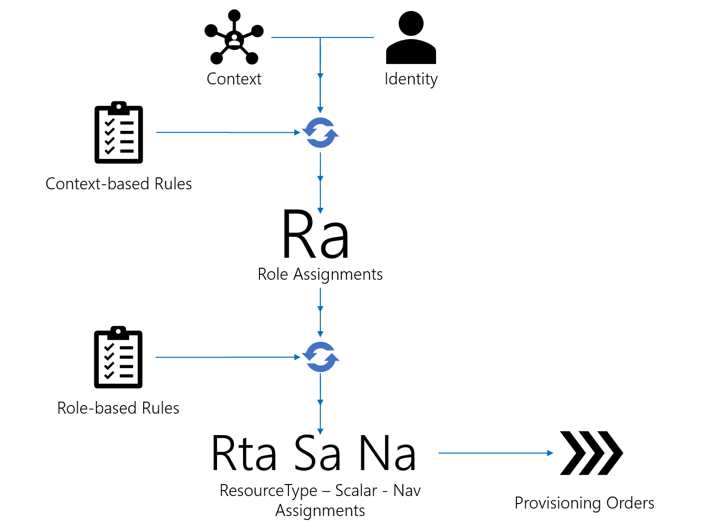

Assignment Policy
The assignment policy is the set of rules enforced on the resources to compute automatic assignments and risks. It contains the role model and risks definition.
The Role Model
The Introduction Guide introduced the Entitlement Management and how it influences assigning entitlements to identities. Let's sum up the key principles here.
- Identities are resources.
- Assignments of entitlements are materialized by resources, their values and associations.
- Identity Manager uses a role-based assignment policy to grant entitlements to identities, i.e. granting a role entails granting entitlements.
- The role model is first a catalog of available roles ( Single Role and Composite Role ), identified by meaningful names aimed at non-technical end-users. These roles represent status of trust and privileges, to be assigned to identities, manually or automatically.
- The role model is also a set of rules aiming at assign automatically roles to identities, based on relevant criteria, namely Dimension .
- The role model classifies resources by security concerns thanks to
- The role model contains correlation rules identifying ownership of target resource by an identity.
- The role model contains provisioning rules describing if and how target resources and their values should be computed from source resource values.
Resource types, single roles and composite roles can be grouped into Category . They are used in the UI to organize the Roles catalog display. Categories are organized in a hierarchical tree structure.
Policy
A Policy is a set of assignment rules. At least one policy must be declared.
All resource types, single roles and composite roles and categories belong to a policy.
Dimensions And Contexts
One of Identity Manager's distinctive feature is the use of Attribute-Based Access Control methods to automatically grant fine-grained entitlements.
Every identity in the organization operates within a specific context. It is a set of information relevant to making decisions about assigning entitlements for an identity. For example, an employee working in the R&D department of the New York office at Contoso Corporation is associated with the { R&D, New York } context.
Analyzing contexts in the organization allows the integration team, in collaboration with a knowledgeable member of the target organization, to define key criteria on which to base assignments of entitlements decisions. Those key criteria are called dimensions.
The integration team defines Context Rule and Record Section in the applicative configuration that assigns, for every identity, a context as a set of dimension-value pair.
The details of how contexts are generated can be found in Generate Contexts .
Every dimension is associated with a finite set of possible values. That means there is a finite set of possible context. Hence, typical contexts within which an identity operates are modeled.
Contexts can then be used as a filter for choosing an identity to which to assign a role.
This mechanism allows the integration team to define rules to take care of the most basics and repetitive assignments. For example, a Single Role Rule assigning a specific single role to the resources that match a specific context.
Example
A standard multi-site and multi-department organization would use the following dimensions:
Location, the physical location where an employee works.Department, the employee working department, such asIT,SalesorAccounting.
Roles could be assigned based on location and department of the resource representing an identity.
For a rule such as "every employee that works in IT must have access to the servers room", the ServerRoomAccess single role would be assigned to every resource of entity type employee whose context contains the value IT for the dimension Department.
A context rule would have been written first, defining for every resource of entity type employee how to compute a context: the Department dimension value is found in the department property of the resource, the Location dimension value is found in the site property of the resource.
Write Roles And Assignments Rules
The role model takes a very important place in the applicative configuration. It's built by the integration team, in collaboration with the target organization, to match the organization's needs and rules in security.
The role model is built iteratively, together with the Entity Model, as they closely influence one another.
The role model evolves and lives during the whole IGA project's lifecycle. Organization rules change, roles and assignment rules are updated, deleted, added.
The following gives a few ideas about how a to approach the writing of a role model.
1. Identify single roles
The first iteration of building of the organization reference model starts to reveal the archetypal responsibilities and positions of the members of the organization. A Single Role is defined for every fine-grained organization-level responsibility or position.
Example
Contoso Corporation employs project managers in their Aircraft Design department to manage aircraft design projects for clients all around the world. Those projects involve aerodynamics and structure engineers, construction workers, quality control agents and sale engineers.
Everyone in the team needs to access the Internet to do research and send e-mails. That's a first typical single role Internet Access that everyone should be assigned to be able to work.
Aerodynamics engineers need to access remote high-performance computation servers specifically designed to solve aerodynamics equations. The sensitive nature of the data sent to those servers, plus the availability constraints, require restricting access to engineers that absolutely need it to perform their daily tasks. That's another responsibility, that can be translated to a single role Aerodynamics Computation Server for example, that grants access to those servers.
Structure engineers, on the other hand, do not perform such heavy computations and do not need access to the aerodynamics computation server. They can work locally, performing computations on their own workstation. They're not assigned the Aerodynamics Computation Server role.
Quality control agents need access to sensitive information such as accident reports, on the internal data server named data0. Those highly sensitive privileges are not assigned to everyone. They can be translated to the Data Server data0 role.
The project manager needs access to the data0 and data1 servers with client contracts. The Data Server data0 and Data Server data1 roles translate those responsibilities.
2. Identify navigation rules and ownership
For every Single Role assigned to an identity, fine-grained entitlements need to be granted. Those are the resource values in a managed system.
Hence, for every single role, the relevant managed systems, type of resource, and resource values to fulfill are identified.
They are materialized by:
-
Provisioning rules, such as
-
Resource Correlation Rule , that identify for an identity, the target resources to fulfill;
-
The resource types identified this way could be suggested to security officers for review, checking that they match their mental model of the managed system's resources.
Sets of scalar rules and navigation rules relevant to a specific resource type are gathered into a
Example
Let's consider the Internet Access defined at step 1.
In practice, Contoso Corporation authorizes or block a user Internet access by setting per-user outbound policies on their network firewall. The firewall integrates with Active Directory which make it possible to use Active Directory groups membership to enable or disable policies for a user.
A security officer, to grant Internet access to an employee, would in practice assign a Internet Access group membership to their Active Directory account. That is a fine-grained entitlement entailed by the assignment of the Internet Access single role. That means that, to be able to grant or restrict Internet access, the link between an identity and their Active Directory account, used to login to work, must be known.
To modelize that need within the role model, every identity with Internet Access single role is associated with an Active Directory account. We can find the Active Directory for an identity by comparing the identity email with the Active Directory entry e-mail. That's an example of
Resource Correlation Rule
that define the ownership of an Active Directory entry resource by an identity resource.
3. Write assignment rules
Single Role Rule describe criteria for which a Single Role is assigned to a resource. The main criterion is a dimension value. For a given resource, the single role is assigned if the resource's context matches the given dimension value. The second criterion is the assignment of a specific Composite Role (see further).
A
Those rules are used by Identity Manager to automate role assignments. They are absolutely optional. A first version of the project can rely on manual assignments of single roles. Those have meaningful names: Identity Manager already provides a value by allowing non-technical users to request or assign entitlements. Navigation and or scalar rules can be written in a second time to allow automated fulfillment. Single role rules can be written after that to set up automated assignments.
Example
The need for aerodynamics engineers to access the remote computation server is translated by a single role rule: if the department (a dimension) of that identity is Aerodynamics R&D (a dimension value), then the Aerodynamics Computation Server single role must be granted.
The need for assignment of the Internet Access group to the Active Directory account, if the identity is assigned the Internet Access single role is modeled by a navigation rule that stipulates that if that identity is assigned that role, then the memberOf property of the owned Active Directory entry resource should be set to the AD group named Internet Access.
4. Use Composite Roles To Organize Single Roles (optional)
Single Role can be packaged into Composite Role . Assigning a composite role to an identity immediately assigns the packaged single role to that identity. Single roles assigned this way are said to be inferred.
The Composite Role Rule (see composite role rules describe criteria for which a composite role is assigned to an identity. Then, the composite role can be used as a condition in a Single Role Rule. This is how packages are built.
Summary - A mental model to help build a role model
To help build a role model, consider this mental model that captures the key events occurring between the assignments of a role and the actual assignment of entitlement.
- A resource-identity
Riis associated with a contextCi, i.e. dimension values. Riis assigned a single roleSRa, manually or as a result of dimension comparisons.- Identity Manager's engine identifies a resource type
Rtwith the type ruleTrwhose condition matchesSRaand/orCi. - Using
Rt's definition, Identity Manager's engine identifies by correlation a target resourceTrfrom the resource repository that must be created or updated to materializeSRa. - Identity Manager's engine identifies
Rt's navigation ruleNrwhose condition matchesSRaand/orCi, and associated scalar rulesSr. - Using
SrandNr's definition, Identity Manager's engine identifiesTr's values to be provisioned to materializeSRa.
This series of steps is actually a very simplified version of the Evaluate Policy algorithm.

Evaluate Policy
This chapter gives the basis of the assignments vocabulary. The next chapter enlightens the reader about the inner details of the Evaluate Policy algorithm. See the Evaluate Policy topic for additional information.